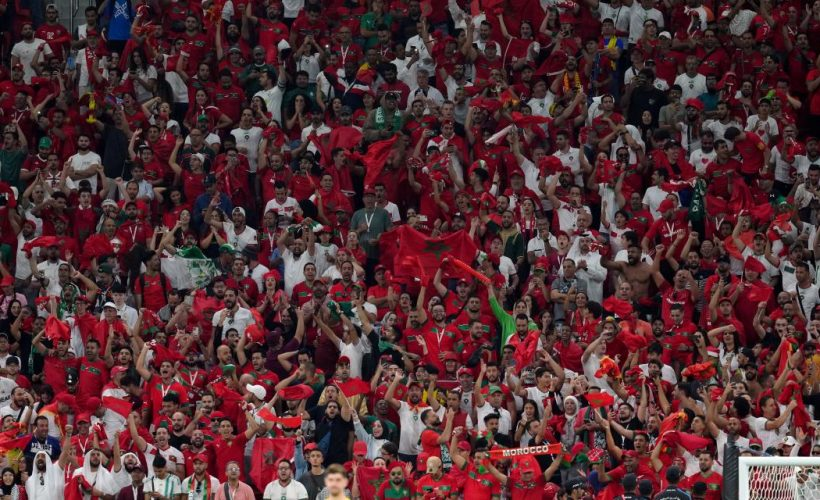
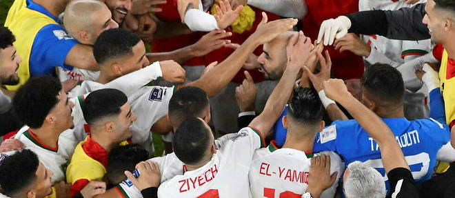

|  |  |
Luis Enrique Analysis of Morocco
“I see a Morocco side that is very motivated. They are going to be a very difficult opponent. I have a feeling that there will be a lot of Moroccans there and that could work in their favour. It’s going to be a tough game, of course.